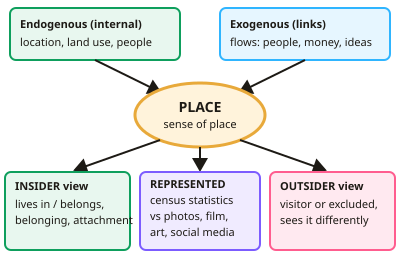

A-level Geography Year 12 · Topic 3
Changing places
Changing places explores what makes a place special, how places are connected, and how they change.
We will study the meaning of place, insider and outsider perspectives, sense of place, and how places are represented.
Then we look at flows and connections, endogenous and exogenous factors, deindustrialisation, regeneration, and how to research places.
- 9 subtopics
- 382 questions
- Free: 3.1 notes and 10 questions
In this topic
- 3.1Place, meaning and representationFree below · 56 questions
- 3.2Place change and regenerationOpen in Full Marks · 18 questions
- 3.3The concept of place: insider and outsider perspectives, attachment and sense of placeOpen in Full Marks · 39 questions
- 3.4Relationships and connections: flows, historical and global links shaping placesOpen in Full Marks · 35 questions
- 3.5Endogenous and exogenous factors shaping place character and identityOpen in Full Marks · 35 questions
- 3.6Demographic, economic and cultural change: deindustrialisation and place declineOpen in Full Marks · 76 questions
- 3.7Measuring place and regeneration success: deprivation indices, inequality and evaluationOpen in Full Marks · 34 questions
- 3.8Place studies: researching a local place and a contrasting placeOpen in Full Marks · 30 questions
- 3.9Population change: natural increase, the demographic transition, food supply and carrying capacityOpen in Full Marks · 59 questions
3.1 · Free notes
Place, meaning and representation

Key points
- A place is a location given meaning by people; sense of place describes the feelings and attachments people develop.
- Insider perspectives come from those who live in or belong to a place; outsider perspectives come from visitors or those excluded.
- Endogenous factors are internal characteristics (location, topography, land use, infrastructure, demographics); exogenous factors are relationships with other places (flows of people, money, ideas and resources).
- Places are represented through statistics (census, official data) and informal media (photographs, film, art, literature, social media), which can present very different images.
- Places change over time through shifting flows, economic restructuring, migration and regeneration.
In more detail
- Agnew's three elements: location (where it is), locale (the setting of buildings, streets and parks) and sense of place (the feelings people attach to it).
- Contrasting representations: a tourist brochure may show Hackney as vibrant and creative, while deprivation statistics show high poverty in parts of it.
- Changing place: Shoreditch in East London changed from warehouses and workshops into a tech hub nicknamed "Silicon Roundabout".
- Endogenous vs exogenous: endogenous factors include site, relief and local culture; exogenous factors include migration, investment and government policy.
- Data sources: census figures, deprivation indices, house prices and crime rates, alongside photos, oral histories and social media.
Practice
Place, meaning and representation: 10 questions
Pick an answer to check it, or open the answer for the explanation.
1. What are endogenous factors?
- External relationships with other places
- Characteristics within the place, such as land use and demographics
- Global flows only
- Media representations
Show answer
B: Characteristics within the place, such as land use and demographics. Exogenous factors involve links to other places.
2. What is a sense of place?
- The exact map coordinates
- The feelings and meanings people attach to a place
- The size of a settlement
- The number of residents
Show answer
B: The feelings and meanings people attach to a place. It differs between individuals and groups.
3. What distinguishes an insider perspective?
- It comes from a tourist
- It comes from those who live in or belong to the place
- It uses only statistics
- It is always negative
Show answer
B: It comes from those who live in or belong to the place. Insiders and outsiders often perceive the same place differently.
4. Which is an informal representation of place?
- Census data
- Film, art and social media images
- Government statistics
- Land registry records
Show answer
B: Film, art and social media images. Informal media shape perceptions powerfully.
5. Which is an exogenous factor shaping a place?
- Local topography
- Flows of people, money and ideas from elsewhere
- Local building materials
- Soil type
Show answer
B: Flows of people, money and ideas from elsewhere. External connections influence how places develop.
6. What is an exogenous factor affecting a place?
- Its local topography
- Flows of people, money and ideas connecting it to other places
- Its historic buildings
- Its population size alone
Show answer
B: Flows of people, money and ideas connecting it to other places. Endogenous factors, by contrast, are internal characteristics.
7. A council uses census data to call a district deprived, but a local film shows it as vibrant and close-knit. What is the best explanation for the difference?
- Each representation is selective and emphasises different aspects of the place
- The census data must be wrong because films are always accurate
- Films can only represent places that are not deprived
- Census data only records the views of outsiders
Show answer
A: Each representation is selective and emphasises different aspects of the place. All representations are selective. Statistics show measurable conditions, while films capture feelings and community life. Neither is complete, so they can present very different images of the same place.
8. A tourism poster for a Cornish fishing village shows sunsets and a busy harbour but not unemployment or empty winter homes. What is the main limitation of this representation?
- It is selective and promotional, so it gives a one-sided image
- It uses quantitative data that is out of date
- It reflects only the views of long-term residents
- It is formal, so it is always unbiased
Show answer
A: It is selective and promotional, so it gives a one-sided image. Marketing material is designed to attract visitors and so leaves out negative aspects. This makes it an unreliable guide to the everyday reality of the place.
9. Census data shows 3,200 of a district's 8,000 residents are aged over 65. What percentage of residents is this?
- 25%
- 32%
- 40%
- 64%
Show answer
C: 40%. Percentage = part ÷ whole × 100 = 3,200 ÷ 8,000 × 100 = 40%.
10. Between 2001 and 2021 a coastal town's flows shifted from fish exports to tourist visits and retirement migration. What does this best show about places?
- Only statistics can show change in places
- Places change over time as their flows and connections shift
- Only endogenous factors affect places
- Places keep a fixed character
Show answer
B: Places change over time as their flows and connections shift. Changing flows of goods, people and money alter a place's economy, demographics and character over time. Places are therefore dynamic, not fixed.
Keep going in Full Marks
Full Marks has 56 questions on Place, meaning and representation (46 more than here), set out in practice levels. You also get notes and 3D models for all 9 subtopics of Changing places, plus games, timed exams and past papers.